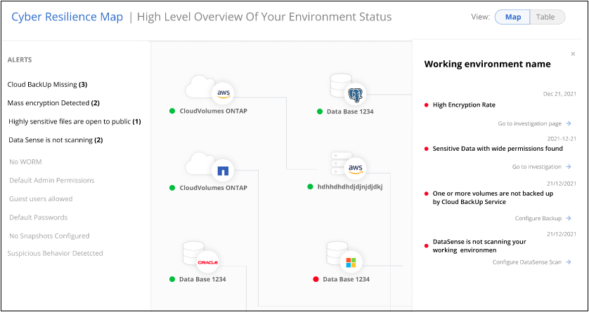
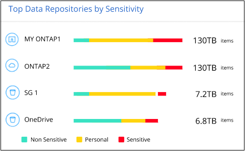

请求文档变更
请求文档变更 在 GitHub 上编辑
在 GitHub 上编辑 提供者指南
提供者指南管理数据源的网络安全建议
使用勒索软件保护信息板查看所有工作环境和数据源的网络弹性概况。您可以深入查看每个区域，以了解更多详细信息和可能的修复方法。

网络弹性映射
网络弹性映射是信息板中的主要区域。通过它，您可以直观地查看所有工作环境和数据源，并查看相关的网络弹性信息。

该映射由三部分组成：
- 左侧面板
-
显示服务在所有数据源中监控的警报列表。它还指示环境中处于活动状态的每个特定警报的数量。拥有大量一种类型的警报可能是尝试首先解决这些警报的一个很好的原因。
- 中央面板
-
以图形格式显示所有数据源，服务和 Active Directory 。运行状况良好的环境会显示绿色指示符，而发出警报的环境会显示红色指示符。
- 右侧面板
-
单击带有红色指示符的数据源后，此面板将显示该数据源的警报并提供解决警报的建议。对警报进行排序，以便首先列出最新的警报。许多建议都会引导您使用另一个 Cloud Manager 服务来解决问题描述 问题。
这些警报是当前跟踪的警报和建议的修复方法。
| 警报 | Description | 修复 |
|---|---|---|
检测到高数据加密率 |
数据源中加密文件或损坏文件的百分比异常增加。这意味着过去 7 天加密文件的百分比增加了 20% 以上。例如，如果 50% 的文件已加密，则此数字会在一天之后增加到 60% ，您将看到此警报。 |
单击链接以启动 "数据感知调查页面"。您可以在此处为特定的 _工作 环境 _ 和 _类别 （加密和损坏） _ 选择筛选器，以查看所有加密和损坏文件的列表。 |
发现具有广泛权限的敏感数据 |
在文件中发现敏感数据，而在数据源中，访问权限级别太高。 |
单击链接以启动 "数据感知调查页面"。您可以在此处选择特定 WorkEnvironment ， _Sensitivity Level （ Sensitive Personal ） _ 和 _Open Permissions 的筛选器，以查看具有此问题描述 的文件列表。 |
一个或多个卷不会使用 Cloud Backup 进行备份 |
工作环境中的某些卷未使用进行保护 "云备份"。 |
单击链接启动 Cloud Backup ，然后您可以确定工作环境中未备份的卷，然后确定是否要在这些卷上启用备份。 |
Data sense 不会扫描数据源中的一个或多个存储库（卷，存储分段等） |
您的数据源中的某些数据未使用进行扫描 "云数据感知" 确定合规性和隐私问题并寻找优化机会。 |
单击此链接可启动 Data sense 并为未扫描的项目启用扫描和映射。 |
按数据敏感度排名前几位的数据存储库
Top Data Repository by Sensitivity level_ 面板最多可列出包含最敏感项目的前四个数据存储库（工作环境和数据源）。每个工作环境的条形图分为：
-
非敏感数据
-
个人数据
-
敏感的个人数据

您可以将鼠标悬停在每个部分上以查看每个类别中的项目总数。
单击每个区域以在 " 数据感知调查 " 页面中查看筛选后的结果，以便您可以进一步调查。
域管理员组控制
域管理员组控制面板显示已添加到域管理员组中的最新用户，以便您可以查看是否应允许这些组中的所有用户。您必须拥有 "集成了全局 Active Directory" 进入 Cloud Data sense ，以使此面板处于活动状态。

默认管理管理组包括 " 管理员 " ， " 域管理员 " ， " 企业管理员 " ， " 企业密钥管理员 " 和 " 密钥管理员 " 。
按打开权限类型列出的数据
_Open Permissions_panel 会显示正在扫描的所有文件中存在的每种权限的百分比。此图表来自 Data sense ，其中显示了以下类型的权限：
-
无开放访问
-
对组织开放
-
打开公有
-
未知访问

您可以将鼠标悬停在每个部分上以查看每个类别中的文件百分比和总数。
单击每个区域以在 " 数据感知调查 " 页面中查看筛选后的结果，以便您可以进一步调查。
按加密文件列出的数据
" 已加密文件 " 面板显示经过加密的文件百分比最高的前 4 个数据源。这些通常是受密码保护的项。为此，它会比较过去 7 天的加密速率，以确定哪些数据源的增长率超过 20% 。增加此数量可能意味着勒索软件已攻击您的系统。

单击其中一个数据源对应的行可在 " 数据感知调查 " 页面中查看经过筛选的结果，以便您可以进一步调查。
关键业务数据的权限状态
业务关键型数据权限分析面板可显示业务关键型数据的权限状态。这样，您就可以快速评估业务关键型数据的保护情况。

最初，此面板没有数据，因为只有在您选择了为查看最关键的业务数据而创建的 Data sense policies 之后，才会填充数据。请参见操作说明 "使用 Data sense 创建策略"。
在此面板中添加最多 2 个策略后，此图将显示符合策略标准的所有数据的权限分析。其中列出了以下项的数量：
-
Open to 公有 权限— Data sense 认为对公有 开放的项
-
开放给组织权限— Data sense 认为对组织开放的项
-
无打开权限— Data sense 视为无打开权限的项
-
未知权限— Data sense 视为未知权限的项
将鼠标悬停在图表中的每个条上可查看每个类别中的结果数。单击一个栏，此时将显示 "Data sense 调查 " 页面，以便您可以进一步调查哪些项具有打开权限，以及是否应对文件权限进行任何调整。